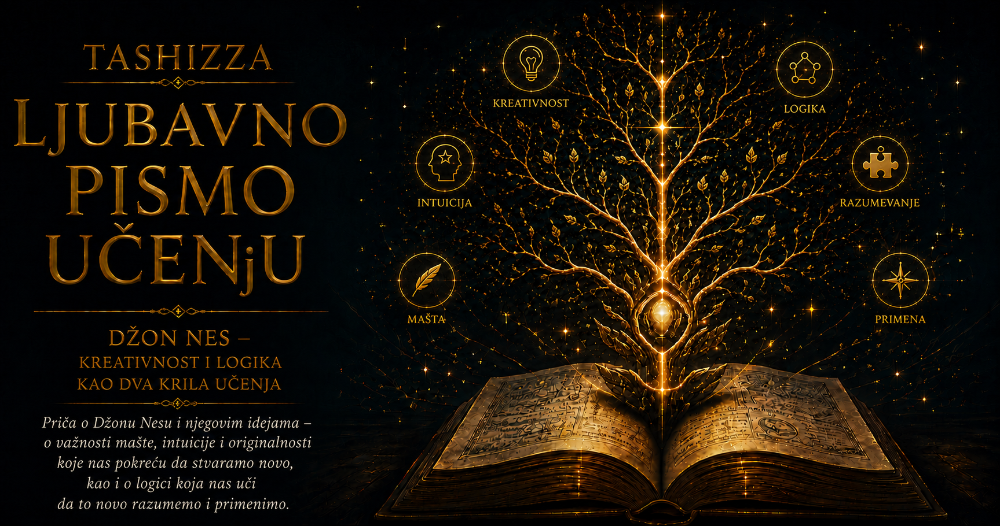

Ljubavno pismo učenju

Dugo se odluka zamišljala kao usamljeni čin. Čovek stoji pred nekoliko mogućnosti, procenjuje šta može da dobije ili izgubi i bira ono što mu najviše odgovara. Takav opis dovoljan je kada biramo knjigu, obrok ili put do kuće. Međutim, mnoge važne odluke ne donosimo pred nepomičnim svetom. Njihov ishod zavisi od ljudi koji istovremeno posmatraju nas, predviđaju naše ponašanje i prilagođavaju mu sopstvene poteze.
Trgovac određuje cenu razmišljajući o konkurentima. Radnik pregovara o plati procenjujući koliko je potreban poslodavcu i koliko drugih kandidata postoji. Država razmatra sporazum pokušavajući da predvidi namere druge strane. Čak i odluka da nekome prvi uputimo izvinjenje zavisi od toga kako zamišljamo njegov odgovor. U svim tim situacijama posledice svog izbora ne određujemo sami. One nastaju iz susreta više odluka.
Svaki učesnik posmatra druge, pretpostavlja šta žele i bira imajući u vidu njihove moguće izbore. Drugi čine isto. Tako nastaje krug uzajamnih očekivanja: odlučujemo prema onome što očekujemo od njih, dok oni odlučuju prema onome što očekuju od nas. Džon Neš pronašao je matematički način da opiše trenutak u kojem se takva mreža odluka privremeno umiri.
Teorija igara postojala je i pre Neša. Džon fon Nojman i Oskar Morgenštern pokazali su da se strateški sukobi mogu proučavati strogo i sistematski. Reč „igra” u njihovom radu nije označavala zabavu, već svaku uređenu situaciju u kojoj ishod za jednog učesnika zavisi i od odluka drugih. Igra je mogla biti partija šaha, nadmetanje kompanija, vojni sukob, aukcija, trgovinski pregovor ili politička borba.
Rani rezultati bili su naročito snažni u igrama nultog zbira, u kojima dobitak jedne strane odgovara gubitku druge. Veliki deo stvarnog života ipak ima složeniju strukturu. Dve kompanije mogu obe ostvariti dobit, mada ne jednaku. Države mogu istovremeno izbeći rat i sačuvati deo svojih interesa. Pregovor određuje kako će se vrednost podeliti, ali može odrediti i hoće li ona uopšte biti stvorena ili uništena. Svet je bio pun strateških odnosa koji se nisu mogli svesti na jednostavnu podelu pobednika i poraženog.
Neš je početkom pedesetih godina postavio opštije pitanje: postoji li stanje u kojem je svaki učesnik izabrao najbolji odgovor na izbore ostalih? Odgovor je oblikovao pojmom koji danas nazivamo Nešovom ravnotežom ili Nešovim ekvilibrijumom. Ravnoteža postoji kada nijedan učesnik ne može samostalno da poboljša svoj položaj promenom samo sopstvene strategije, pod pretpostavkom da svi drugi zadrže svoje odluke.
Zamislimo vozače koji moraju da izaberu kojom će stranom puta voziti. Ako svi voze desnom stranom, nijedan pojedinac nema razlog da sam pređe na levu. Ako svi voze levom, isto važi u obrnutom smeru. Oba pravila mogu predstavljati ravnotežu. Nijedno nije zapisano u prirodi puta. Stabilnost nastaje iz usklađenih očekivanja: svako postupa na određeni način zato što očekuje da će tako postupati i ostali.
Ovaj primer otkriva da ravnoteža ne mora biti jedino moguće rešenje. Ona ne mora biti ni najbolji, najpravedniji ili najpoželjniji poredak. Označava stanje u kojem niko nema korist od jednostranog odstupanja. Sistem može biti stabilan iako su gotovo svi njegovi učesnici nezadovoljni. Može opstajati zahvaljujući strahu, nepoverenju, navici ili nemogućnosti da ljudi usklađeno pređu na povoljnije rešenje.
Kompanije mogu trošiti ogromna sredstva na oglašavanje prvenstveno zato što to čine njihovi konkurenti. Kada bi sve smanjile troškove, možda bi zadržale slične tržišne odnose, ali nijedna ne želi da bude jedina koja će izgubiti vidljivost. Države mogu gomilati naoružanje iako bi svaka radije živela u bezbednijem svetu sa manje oružja. Dvoje ljudi može dugo ćutati posle sukoba jer svako očekuje da onaj drugi prvi popusti. Stabilnost takvih odnosa ne čini ih mudrim.
Nešov pojam promenio je samo pitanje koje postavljamo. Više nije dovoljno pitati: „Koji je najbolji potez?” Neophodno je dodati: „Najbolji odgovor na čije ponašanje i pod kojim očekivanjima?” Strategija nema vrednost nezavisnu od okruženja koje stvaraju ostali učesnici. Visoka cena može donositi dobit dok je održavaju i konkurenti, a postati pogubna čim jedan od njih započne sniženje. Čvrst stav može doneti ustupke kada druga strana želi dogovor, ali može zatvoriti put sporazumu ako obe strane popuštanje tumače kao slabost.
Strateško razmišljanje zato ne treba poistovećivati sa lukavstvom ili obmanom. Njegova osnova je svest da naš potez menja okolnosti u kojima će drugi birati. Otvorenost, obećanje, reputacija, povlačenje i dobrovoljno ograničavanje sopstvene slobode mogu imati stratešku snagu. Obećanje vredi kada druga strana veruje da ćemo ga ispuniti. Pretnja deluje samo ako je uverljiva. Pravilo kojem se i sami podvrgavamo ponekad uliva više poverenja od uveravanja da ćemo postupiti ispravno kada dođe trenutak odluke.
Matematička snaga Nešovog rada nalazi se i u dokazu da svaka konačna igra ima najmanje jednu ravnotežu ako učesnicima dopustimo mešovite strategije. Igrač tada ne bira uvek isti potez, već različite mogućnosti koristi sa određenim verovatnoćama. Golman koji brani penal ne sme unapred postati predvidljiv. Isto važi za napadača. Njihova najbolja ponašanja mogu uključivati pažljivo raspoređenu neizvesnost.
Dokaz postojanja ravnoteže dao je teoriji igara zajedničku tačku oko koje su mogla da se organizuju dalja istraživanja. Ekonomisti su počeli da ispituju koliko ravnoteža postoji, koje su među njima održive, kako učesnici do njih dolaze i kako pravila mogu usmeriti ponašanje prema korisnijem ishodu. Tržišta više nisu posmatrana samo kao bezlični tokovi ponude i potražnje. U središte analize ušli su pregovori, aukcije, ugovori, reputacija, informacije i očekivane reakcije drugih.
Džon Harsanji proširio je teoriju na situacije u kojima učesnici nemaju potpune informacije o tuđim ciljevima, mogućnostima i namerama. Rajnhard Zelten proučavao je odluke koje se odvijaju kroz vreme i pokazao da neke ravnoteže počivaju na pretnjama koje njihovi autori kasnije ne bi imali razlog da sprovedu. Iz Nešovog pojma razvila se čitava porodica preciznijih ravnotežnih koncepata.
Teorija je prešla granice ekonomije. U biologiji je pomogla proučavanju ponašanja čiji uspeh zavisi od zastupljenosti drugih obrazaca u populaciji. Agresivnost može biti korisna dok je retka, a skupa kada postane česta. Saradnja, povlačenje, izbor partnera i raspodela resursa mogu se razvijati kroz uzajamno prilagođavanje, bez svesnog matematičkog računanja organizama.
U računarstvu je strateška logika postala posebno važna sa razvojem interneta, digitalnih tržišta i sistema u kojima deluje veliki broj samostalnih učesnika. Korisnici, platforme, prodavci, kupci, oglašivači i algoritmi slede različite ciljeve. Dizajner sistema zato mora pretpostaviti da će ljudi proučavati ponuđena pravila i tražiti način da ih iskoriste u sopstvenu korist.
Iz takvog problema razvilo se projektovanje mehanizama. Umesto da se samo predviđa ponašanje unutar postojećih pravila, postavlja se pitanje kakva pravila treba napraviti da bi pojedinačni interesi vodili prema željenom zajedničkom rezultatu. Aukcije za radio-frekvencije, digitalno oglašavanje, povezivanje kupaca i prodavaca, raspodela školskih mesta i tržišta električne energije oslanjaju se na ovaj način mišljenja. Dobar sistem ne zahteva savršene ljude; on pažljivo uređuje njihove podsticaje.
Sličan problem pojavljuje se u sistemima veštačke inteligencije sa više agenata. Kada jedan algoritam promeni ponašanje, on menja okruženje u kojem uče svi ostali. Autonomna vozila usklađuju kretanje sa drugim vozilima i ljudskim vozačima. Programi za trgovanje reaguju na postupke drugih programa. Okruženje više nije mirna pozadina, već zajednica učesnika koji neprekidno posmatraju, uče i prilagođavaju se.
Granice Nešove ideje podjednako su poučne kao njena snaga. Dokaz da ravnoteža postoji ne objašnjava kako će stvarni ljudi ili algoritmi do nje stići. Kada postoji više ravnoteža, koncept sam po sebi ne određuje koja će se ostvariti. Istorija, institucije, raspodela moći, početne okolnosti i slučajnost mogu odlučiti koji će poredak postati stabilan.
Ljudi uz to raspolažu ograničenim vremenom, nepotpunim informacijama i nesavršenom pažnjom. Važni su im pravičnost, pripadnost, poverenje, dostojanstvo i reputacija. Ponekad kažnjavaju nepoštenje i kada ih to košta, sarađuju više nego što jednostavan model predviđa ili istrajavaju u štetnom nadmetanju koje bi mogli da prekinu. Matematika može precizno izvesti posledice tek kada smo pažljivo odredili šta učesnici zaista vrednuju.
Nešova ravnoteža zato je snažnija kao jezik za postavljanje pitanja nego kao mašina za nepogrešivo predviđanje. Ona traži da jasno odredimo ko učestvuje, koje mogućnosti ima, šta želi, šta zna i šta očekuje od drugih. Zatim nas prisiljava da proverimo bi li neko imao razlog da sam promeni ponašanje. Na mestu nejasne priče o interesima pojavljuje se uređena analiza uzajamnih odgovora.
Najdublji Nešov doprinos nalazi se u promeni perspektive. Razumna odluka ne može se uvek pronaći zagledanjem samo u sopstvene želje. Moramo razumeti svet tuđih izbora, očekivanja i odgovora u kojem će naša odluka delovati. Istovremeno moramo pamtiti da ono što je stabilno ne mora biti dobro. Kada nas ravnoteža drži u lošem poretku, izlaz se često ne nalazi u još odlučnijem pojedinačnom potezu, već u poverenju, dogovoru ili promeni pravila koja će svim učesnicima otvoriti drugačiji skup mogućnosti.